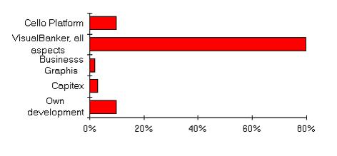

The example contains the following sections:
-
Requirements for Reuse: Areas in which assets should be searched. This includes both functional and
non-functional requirements
-
Candidate Assets: List of all possible assets and the results of the assessment on whether the assets are
applicable to the specific engagement
-
Asset Reuse/Creation plans (not added): For each selected asset, identify the development needs (tailoring,
enhancement, creation).
The following example describes a subset of the project requirements. This list of requirements will evolve in each
phase of development, as the system is understood in more detail.
Functional Requirements
This section describes the business function-related requirements that the assets must provide:
Nonfunctional Requirements
This section describes system related requirements:
Candidate Assets
The following example describes the assets that were considered for reuse on the project.
Bank Customer Presentation
- Applicability to engagement: Provides core business model and function
- Language/Platform Requirements: Smalltalk, OS/2
- Issues:
- Maturity: Version 2.x
- Vendor: IBM Footprint
- Quality: High
- Customizability: High
- Reference for further details: Footprint, IBM Charlotte, Barcelona, AssetWeb
Financial Calculations
- Applicability to engagement: Provides complex financial calculations
- Language/Platform Requirements: OS/2, Windows
- Issues: not OO, provided as C-dlls
- Maturity:
- Vendor: Capitex
- Quality: High
- Customizability: Low
- Reference for further details:
Calendar
-
VisualBanker
-
Reporting
-
VisualAge Reporting Tool
-
Reporter
- Applicability to engagement: Provides reporting capabilities.
- Language/Platform Requirements: Smalltalk, OS/2, Windows.
- Issues:
- Maturity:
- Vendor: Synergistic Software Inc.
- Quality:
- Customizability:
Business Graphics
- Applicability to engagement: Provides business graphics capabilities
- Language/Platform Requirements: Smalltalk, OS/2, Windows
- Issues: Limited in function, currently shipped with VisualBanker
- Maturity: Version 2.x
- Vendor: Dakota Technologies
- Quality: High
- Customizability: High
- Reference for further details: IBM Charlotte WidgetKit/Business Graphics
- Applicability to engagement: Provides business graphics capabilities
- Language/Platform Requirements: Smalltalk, OS/2, Windows
- Issues:
- Maturity:
- Vendor: Objectshare systems, Inc.
- Quality: High
- Customizability:
Persistence Framework
-
VisualBanker persistence mechanism
-
TopLink
- Applicability to engagement: Provides load and store of objects in a relational database .
- Language/Platform Requirements: Smalltalk, OS/2, Windows.
- Issues:
- Maturity:
- Vendor: Objectpeople
- Quality: High
- Customizability:
- Reference for further details:
Legacy Integration and Interoperability
-
CELLO platform
- Applicability to engagement: Provides connections to the Nordbanken legacy system
- Language/Platform Requirements: OS/2
- Issues: Not object oriented
- Maturity:
- Vendor: Norbanken
- Quality: High
- Customizability: High
- Reference for further details: SOM/DSOM
- Applicability to engagement: Provides a possibility for an open object-oriented interface to the CELLO
platform
- Language/Platform Requirements: C++, C, OS/2, Windows, AIX
- Issues: Increases project complexity, lack of skills and experience
- Maturity: Version 2.1
- Vendor: IBM
- Quality: High
- Customizability: High
- Reference for further details:
National Language Support
-
VisualBanker
-
Development Metrics
-
Viceroy Smalltalk Method Quality Metrics Tool
- Applicability to engagement: Provides object-oriented development metrics.
- Language/Platform Requirements: Smalltalk, OS/2, Windows.
- Issues:
- Maturity:
- Vendor: IBM NA foundry
- Quality: High
- Customizability:
- Reference for further details: AssetWeb
-
OOMetric 2.0
- Applicability to engagement: Provides oo development metrics
- Language/Platform Requirements: Smalltalk, OS/2, Windows
- Issues:
- Maturity:
- Vendor: Hatteras Software
- Quality:
- Customizability:
Other Development Tools
-
Object Model Documentation Reverse Engineering Tool
- Applicability to engagement: Provides a way to extract object model documentation from Smalltalk code and
present it as an Microsoft Word document
- Language/Platform Requirements: Smalltalk, OS/2, Windows, Word Macro 2.0
- Issues:
- Maturity:
- Vendor: NORDIC OTP
- Quality:
- Customizability:
- Reference for further details:
Asset Selection List
The graph below is an attempt to illustrate the coverage of the currently selected assets. Coverage is measured in
percent of total application function.

|